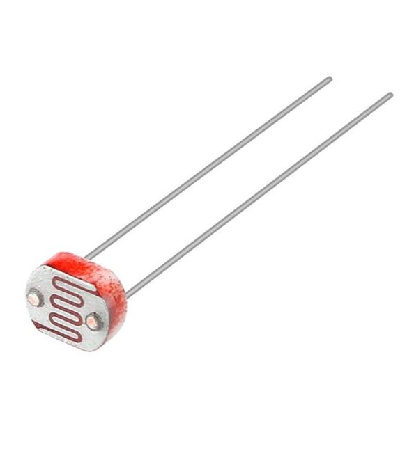

O LDR, ou "Light Dependent Resistor" (resistor dependente de luz), é um tipo de resistor cuja resistência varia de acordo com a intensidade da luz que incide sobre ele. Em condições de baixa luminosidade, a resistência do LDR é alta, permitindo pouco fluxo de corrente. Quando exposto a uma fonte de luz, sua resistência diminui, aumentando o fluxo de corrente. Esse componente é amplamente utilizado em circuitos eletrônicos para detectar luz e é comum em aplicações como sensores de luz, sistemas de automação residencial, lanternas que acendem automaticamente ao escurecer, entre outros. O funcionamento do LDR é baseado no efeito fotoelétrico, onde a luz absorvida gera portadores de carga que conduzem a eletricidade.
O LDR pode ser utilizado como sensor de luz conectando-o em um circuito, geralmente em série com um resistor, formando um divisor de tensão. Quando a luz incide sobre o LDR, sua resistência diminui, o que altera a tensão no circuito. Um microcontrolador ou circuito de comparação mede essa tensão, que aumenta em ambientes iluminados e diminui em ambientes escuros. Com base nessa leitura, o circuito pode acionar dispositivos, como ligar ou desligar luzes ou alarmes, tornando o LDR uma solução prática para automação e controle de iluminação.
O LDR tem várias aplicações no controle de iluminação, entre as quais se destacam:
1. Acendimento Automático de Luzes: Em sistemas de iluminação externa, como postes de rua, o LDR pode acender as luzes ao escurecer e apagá-las ao amanhecer.
2. Sensores de Presença: Em ambientes internos, o LDR pode ser usado em conjunto com circuitos que detectam a presença de luz para ativar ou desativar lâmpadas.
3. Controle de Cortinas ou Persianas: Pode ser utilizado para abrir ou fechar cortinas automaticamente com base na intensidade da luz solar
4. Lanternas Automáticas: Em lanternas que acendem automaticamente quando a luz ambiente diminui, o LDR ajuda a ativar a iluminação quando necessário.
5. Sistemas de Irrigação: Em alguns sistemas de jardinagem, o LDR pode ser usado para monitorar a luz e determinar se as plantas precisam de mais luz ou sombra.
Essas aplicações demonstram como o LDR pode otimizar o uso da iluminação, promovendo eficiência energética e conforto.